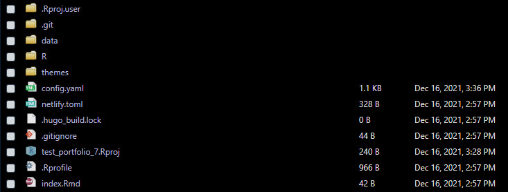

Getting Started with Portfoliodown
getting-started-portfoliodown.RmdThe goal of portfoliodown is to make it painless for data scientists to create polished data science project portfolios, and ultimately help them land high-quality interviews and great careers.
Example Data Science Portfolio
You can quickly view an example data science portfolio that I’ve set up here: https://mattdancho.netlify.app/. This is the default portfolio that comes with portfoliodown.

Example Portfolio - Raditian Theme
Getting Started
First, load portfoliodown.
Next, run the new_portfolio_site() function, which will install a directory of files that are used to create the Data Science Portfolio Template.

Next, serve the site using serve_site() to view what the website will look like once deployed. You can run stop_server() or restart the R session to stop serving. The website will be served at localhost:4321 or a similar URL.
Customizing the Website
Under the hood, the portfoliodown website is simply a blogdown website without a blog. Therefore, the site can be updated just like a Blogdown site. A great reference is Blogdown: Creating Websites with R Markdown.
We’ll cover a few key aspects of customization.
config.yaml
The config.yaml identifies the overall aspects of the website including:
Params: Google Tag Manager, Logo, Sections (section order can be adjusted here)
Menu: Modifies the navbar tabs and order.
homepage.yml
Navigate in the directory to data > homepage.yml, where the main sections of the website can be updated.

enable: In general, you can toggle visibility of a section by setting totrue/falseContent: You can modify all of the section content. The layout will stay the same, but the text, images and buttons can be modified.
Deployment
Deployment is recommended in two steps:
Push your website to Github: Use
use_github()to push the repository from your local machine to the remote GitHub site.Connect Netlify to GitHub & Publish: Netlify has options for free hosting of websites. Simply create an account. Then connect Netlify to GitHub. Select the GitHub repo containing your website. Then deploy.
Acknowledgements
The portfoliodown package would not be possible without the awesome work of the raditian-free-hugo-theme. This is one of the best hugo portfolio templates around.